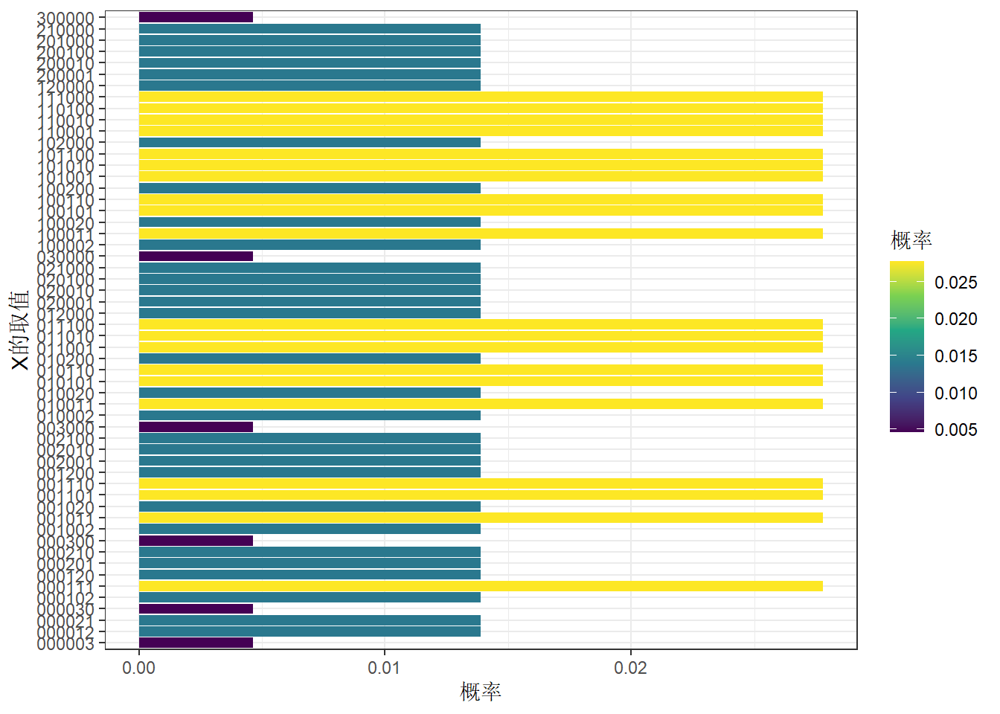

library(tidyverse)
library(gtools)
library(ggsci)二项分布
若记随机变量\(X\)表示: \(n\)次伯努利实验中实验成功的次数,则\(X~B(n,p)\)
随机变量的取值：\(0,1,...,n\)
参数： - \(n\): 试验次数 - \(p\): 伯努利实验的成功概率
概率质量函数(PMF)：
# 假设n=5,p=0.5
n=5
p=0.3
df<-data.frame(k=0:5) %>%
mutate(p=choose(n,k)*p^k*(1-p)^(n-k),
p2=dbinom(k,5,0.3))
df k p p2
1 0 0.16807 0.16807
2 1 0.36015 0.36015
3 2 0.30870 0.30870
4 3 0.13230 0.13230
5 4 0.02835 0.02835
6 5 0.00243 0.00243ggplot(df,aes(k,p,fill=factor(k)))+
geom_col()+
scale_fill_lancet(alpha = .5)+
labs(x='X的取值',y='概率',fill='X')+
theme_bw()# 抽样模拟
data.frame(x=rbinom(1000,5,0.3)) %>% count(x) %>%
mutate(freq=n/sum(n)) %>%
ggplot(aes(x,freq,fill=factor(x)))+
geom_col()+
scale_fill_lancet(alpha = .5)+
labs(x='X的取值',y='频率',fill='X')+
theme_bw()多项分布
多项分布（Multinomial Distribution）是多次独立实验中，每次实验有多个可能结果的一种概率分布。它是二项分布的推广，适用于每次试验有超过两个可能结果的情况。
假设进行 \(n\) 次独立试验，每次试验有 \(k\) 个可能的结果（例如，分类问题中的多个类别）。令每个试验的结果分别属于类别 \(1, 2, \dots, k\)，且每个类别的概率分别为 \(p_1, p_2, \dots, p_k\)（其中 \(p_1 + p_2 + \dots + p_k = 1\)）。
在这种情况下，记\(n\)次实验后的结果用向量\(X = (X_1, X_2, ..., X_k)\) 表示。多项分布描述的是X的分布，在 \(n\) 次试验中，各类别 \(i\) 分别被选中的次数为 \(x_i\) 同时出现的概率，其中 \(i = 1, 2, \dots, k\)，且 \(x_1 + x_2 + \dots + x_k = n\)。
概率质量函数（PMF）为：
\[ P(X_1 = x_1, X_2 = x_2, \dots, X_k = x_k) = \frac{n!}{x_1! x_2! \dots x_k!} p_1^{x_1} p_2^{x_2} \dots p_k^{x_k} \]
其中，\(X_i\) 表示类别 \(i\) 的出现次数，\(x_i\) 表示类别 \(i\) 的观察次数，且 \(x_1 + x_2 + \dots + x_k = n\)。
随机变量的取值：也即向量\(X = (X_1, X_2, ..., X_k)\)的取值，假设每个维度取值分别为 \(x_1, x_2, \dots, x_k\) ，则必须满足\(x_1 + x_2 + \dots + x_k = n\)，且每个维度取值不能为负数。
参数: - \(n\)：总的试验次数。 - \(p_1, p_2, \dots, p_k\)：每个类别的成功概率。
# 以掷骰子举例，显然k=6,若骰子均匀，则p1=p2=p3=p4=p5=p6=1/6,假设投掷3次n=3
#PMF
f1<-function(xtext){
x=as.numeric(strsplit(xtext,'')[[1]])
factorial(sum(x))/prod(factorial(x))
}
f1('123')[1] 60df<-expand.grid(x1=0:3,x2=0:3,x3=0:3,x4=0:3,x5=0:3,x6=0:3) %>%
filter(x1+x2+x3+x4+x5+x6==3) %>%
arrange(x1,x2,x3,x4,x5,x6) %>%
rowwise() %>%
mutate(x=paste0(x1,x2,x3,x4,x5,x6,collapse = ','),
n=3,
p=f1(x)*(1/6)^x1*(1/6)^x2*(1/6)^x3*(1/6)^x4*(1/6)^x5*(1/6)^x6,
p2=dmultinom(c(x1,x2,x3,x4,x5,x6),size=3,prob=rep(1/6,6))) %>%
relocate(x,n,p,p2)
sum(df$p)[1] 1df %>%
ggplot(aes(x,p,fill=p))+
geom_col()+
coord_flip()+
scale_x_discrete()+
labs(x='X的取值',y='概率',fill='概率')+
scale_fill_viridis_c()+
theme_bw()
#抽样模拟
rmultinom(n=100000,size=3,prob=rep(1/6,6)) %>% t() %>%
as.data.frame() %>%
setNames(paste0('x',1:6)) %>%
count(x1,x2,x3,x4,x5,x6) %>%
mutate(freq=n/sum(n)) %>%
arrange(x1,x2,x3,x4,x5,x6) %>%
rowwise() %>%
mutate(x=paste0(x1,x2,x3,x4,x5,x6,collapse = ',')) %>%
relocate(x,freq) %>%
ggplot(aes(x,freq,fill=freq))+
geom_col()+
coord_flip()+
scale_fill_viridis_c()+
theme_bw()+
labs(x='X的取值',y='频率',fill='频率')狄利克雷分布
狄利克雷分布是多维概率分布的常用先验分布，广泛用于描述离散分布的参数不确定性。其概率密度函数定义如下：
\[ \text{Dir}(\mathbf{x}; \boldsymbol{\alpha}) = \frac{1}{B(\boldsymbol{\alpha})} \prod_{i=1}^k x_i^{\alpha_i - 1} \]
其中：
\(\mathbf{x} = (x_1, x_2, \dots, x_k)\)：满足 \(x_i \geq 0\) 且 \(\sum_{i=1}^k x_i = 1\) 的概率向量。
\(\boldsymbol{\alpha} = (\alpha_1, \alpha_2, \dots, \alpha_k)\)：参数向量，\(\alpha_i > 0\)。
\(B(\boldsymbol{\alpha})\)：Beta 函数的高维推广，定义为：
\[ B(\boldsymbol{\alpha}) = \frac{\prod_{i=1}^k \Gamma(\alpha_i)}{\Gamma\left(\sum_{i=1}^k \alpha_i\right)} \]
性质
参数意义：
- 参数 \(\alpha_i\) 越大，类别 \(i\) 的概率越集中。
- 当所有 \(\alpha_i = 1\) 时，狄利克雷分布退化为均匀分布。
期望： \(\mathbb{E}[X_i] = \frac{\alpha_i}{\sum_{j=1}^k \alpha_j}\)
共轭性：
- 狄利克雷分布是多项分布的共轭先验。
与 Beta 分布的关系
Beta 分布是狄利克雷分布在二维（\(k=2\)）情况下的特例： \(\text{Beta}(x; \alpha, \beta) = \text{Dir}(x, 1-x; \alpha, \beta)\)
在 Beta 分布中，\(\alpha\) 和 \(\beta\) 控制单一维度概率的分布形态。
抽样模拟
df<-rdirichlet(10000,alpha=c(1,2,3,4))
head(df) [,1] [,2] [,3] [,4]
[1,] 0.06050387 0.28488051 0.1947931 0.4598225
[2,] 0.27278400 0.12913185 0.1158272 0.4822570
[3,] 0.04492277 0.15564779 0.3502600 0.4491695
[4,] 0.09197470 0.15377688 0.3784776 0.3757708
[5,] 0.12033018 0.29928809 0.1205808 0.4598009
[6,] 0.19532954 0.06551288 0.6052562 0.1339014head(rowSums(df))[1] 1 1 1 1 1 1apply(df,2,summary) [,1] [,2] [,3] [,4]
Min. 3.547374e-05 0.001483067 0.00874248 0.02162119
1st Qu. 3.121758e-02 0.104720816 0.19631189 0.29216337
Median 7.244895e-02 0.179198937 0.28644871 0.39735537
Mean 9.864132e-02 0.198846903 0.29971047 0.40280131
3rd Qu. 1.392033e-01 0.273743895 0.38844520 0.50507287
Max. 6.587535e-01 0.791078116 0.80618374 0.87520257df %>% as.data.frame() %>%
setNames(paste0('x',1:4)) %>%
pivot_longer(cols=x1:x4,names_to = 'dimension',values_to = 'value') %>%
ggplot(aes(value,fill=dimension))+
geom_density()+
scale_fill_lancet(alpha = .5)+
theme_minimal()# 贝塔分布与狄利克雷分布
df<-data.frame(x=seq(0,1,length.out=1000)) %>%
mutate(pd_beta=dbeta(x,shape1 = 1.5,shape2=2)) %>%
rowwise() %>%
mutate(pd_diri=ddirichlet(c(x,1-x),alpha = c(1.5,2)))
head(df)# A tibble: 6 × 3
# Rowwise:
x pd_beta pd_diri
<dbl> <dbl> <dbl>
1 0 0 0
2 0.00100 0.119 0.119
3 0.00200 0.167 0.167
4 0.00300 0.205 0.205
5 0.00400 0.236 0.236
6 0.00501 0.264 0.264#PDF
ggplot(df,aes(x))+
geom_line(aes(y=pd_beta,linetype='beta',col='beta'),linewidth = 1)+
geom_line(aes(y=pd_diri,linetype='dirichlet',col='dirichlet'),linewidth = 1)+
theme_bw()+
labs(linetype='',col='',y='probability density',title='PDF')rdirichlet(100000,alpha=c(1.5,2)) %>%
as.data.frame() %>%
setNames(paste0('x',1:2)) %>%
pivot_longer(cols=x1:x2,names_to = 'dimension',values_to = 'value') %>%
ggplot(aes(value,fill=dimension))+
geom_density()+
scale_fill_lancet(alpha = .5)+
theme_minimal()rdirichlet(500,alpha=c(1.5,2)) %>%
as.data.frame() %>%
setNames(paste0('x',1:2)) %>%
ggplot(aes(x1,x2))+
geom_point(alpha=.1)+
theme_bw()贝塔分布
plot_data <- expand.grid(alpha = c(0.2,0.5,1,2,5), beta = c(0.2,0.5, 1, 2,5)) %>%
mutate(data=pmap(list(alpha,beta),~{
x=seq(0,1,length.out=1000)
data.frame(x=x,y=dbeta(x,.x,.y))
}))
plot_data %>%
unnest(data) %>%
mutate(params=sprintf('α=%s,β=%s',alpha,beta)) %>%
ggplot(aes(x,y))+
geom_line(aes(group=params,color=factor(beta))) +
facet_wrap(~alpha,nrow=1,drop = T)+
labs(fill='β')+
theme_bw()
plot_data %>%
unnest(data) %>%
mutate(params=sprintf('α=%s,β=%s',alpha,beta)) %>%
ggplot(aes(x,y))+
geom_line(aes(group=params,color=factor(beta))) +
facet_wrap(~alpha,nrow=1,drop = T)+
labs(fill='β')+
theme_bw()+
coord_cartesian(ylim=c(0,10))
plot_data %>%
unnest(data) %>%
mutate(params=sprintf('α=%s,β=%s',alpha,beta)) %>%
filter(alpha<1,beta<1) %>%
ggplot(aes(x,y))+
geom_line(aes(group=params,color=factor(beta))) +
facet_wrap(~alpha,nrow=1,drop = T)+
labs(fill='β',title='α<1,β<1')+
theme_bw()+
coord_cartesian(ylim=c(0,10))
plot_data %>%
unnest(data) %>%
mutate(params=sprintf('α=%s,β=%s',alpha,beta)) %>%
filter(alpha>1,beta>1) %>%
ggplot(aes(x,y))+
geom_line(aes(group=params,color=factor(beta))) +
facet_wrap(~alpha,nrow=1,drop = T)+
labs(fill='β',title='α>1,β>1')+
theme_bw()+
coord_cartesian(ylim=c(0,10))